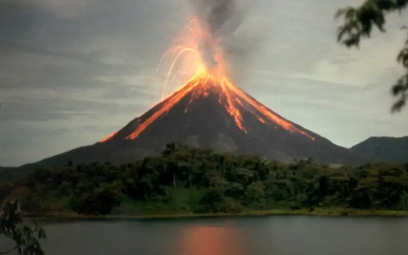
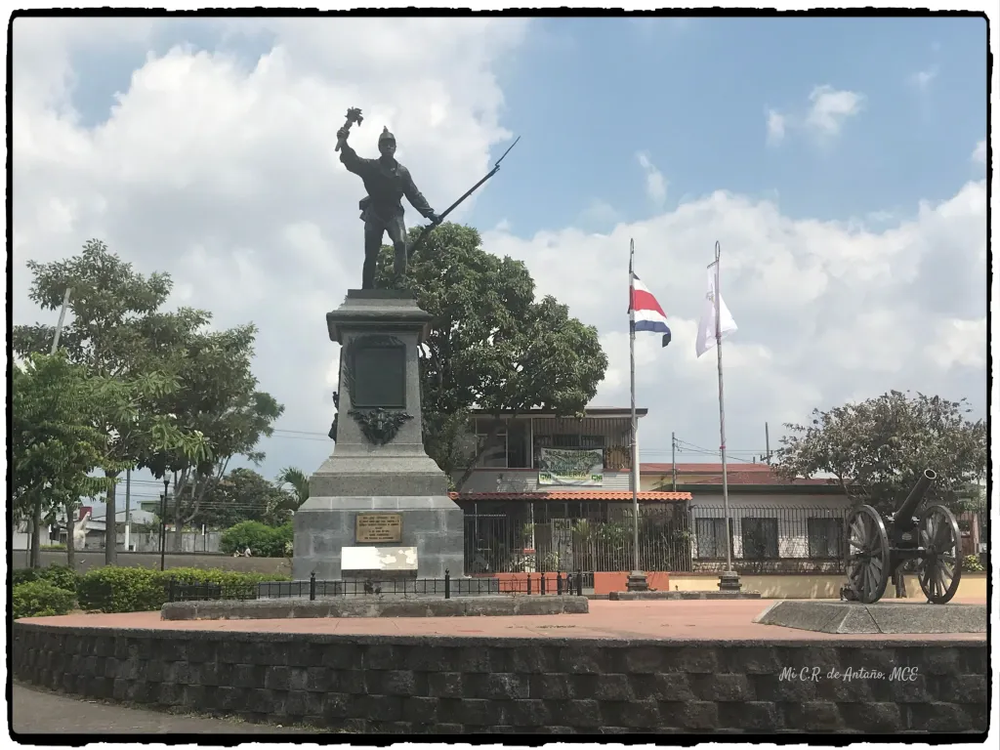

Alajuela City Chamber of Commerce
☰
X
Home
Discover
Directory
Join

Arenal Volcano
Poás Volcano
Celeste River
Toro's Waterfall
LDA Stadium (Alejandro Morera)

Juan Santamaria's Park
Juan Santamaria International Airport